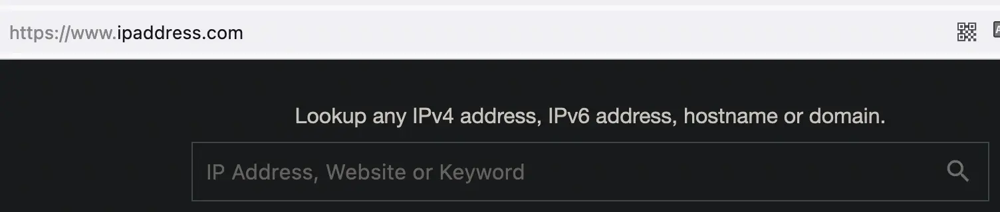

GitHub
AI 导读一分钟导读，先掌握全文主干。
核心观点
- 访问超慢用 hosts/IP 优化，多账号多 SSH 配置要清晰
- Pages、自定义主页与官方工具（gh CLI）玩法
- 2026：Copilot 走向 Agent，Actions 依赖锁定、供应链安全路线图
关键结论与取舍
- 供应链安全（依赖锁定）成为 Actions 2026 主线，CI 要跟上
- gh CLI 2.9x 支持读仓库、skills 与 Copilot，命令行党升级
重要提示
解决访问超慢
-
ip address.com 查域名

-
修改 /etc/hosts
140.82.113.21 collector.Github.com 140.82.113.5 api.github.com 140.82.114.4 github.com 140.82.113.4 github.com 185.199.108.154 github.githubassets.com 185.199.109.154 github.githubassets.com 185.199.110.154 github.githubassets.com 185.199.111.154 github.githubassets.com 185.199.110.153 assets-cdn.github.com 185.199.111.153 assets-cdn.github.com 185.199.108.153 assets-cdn.github.com 199.232.69.194 github.global.ssl.fastly.net -
原因是国内 DNS 解析这些域名大多落到新加坡等海外节点，访问不稳定
-
FastGithub（GitHub 加速神器，原仓库已下架、停止维护；hosts 里的 IP 随时可能变动，2026 年更建议自备代理，比如 Clash 类工具或改用 ghproxy 镜像做长期加速方案）
-
osx-arm64 版本会被直接杀掉，改用 osx-x86
[1] 9226 killed ./fastgithub # 丢掉烦人的输出，并且后台运行 ./fastgithub > /dev/null & -
MacOSx 配置（原文档已随仓库下架）
-
新版 Firefox 需要替换证书：设置 - 证书 - 证书颁发机构 - 导入 cer 证书，否则提示不安全
-
设置系统自动代理为
http://127.0.0.1:38457，或手动代理 http/https 为127.0.0.1:38457
pages服务
-
User / Organization Pages 个人或公司站点
- 创建 username.github.io 仓库
- 仓库设置自定义域名，项目下面会自动增加 CNAME 文件
- 域名解析增加相应的 CNAME 记录
-
Project Pages 项目站点
- gh-pages 分支用于构建和发布；
- 如果 user/org pages 用了独立域名，那托管在账户下的所有 project pages 会用相同域名重定向，除非 project pages 用了自己的独立域名； 如果没有用独立域名，project pages 会通过子路径的形式提供服务https://username.github.io/projectname ；
自定义github主页
-
新建一个同名仓库
官方提示：…. is a special repository. Its README.md will appear on your public profile!
-
编辑该仓库的 README.md 文件
官方工具
名词
-
Sponsor：打赏
-
Watch：有更新时通知提醒。
-
Fork：派生（复制）一份到你的仓库。
-
Code：默认页面，通常会有一个 README.md 文件，用于介绍项目。
-
Pull requests：请求代码合并，想为项目贡献代码可以在这里提交。
-
Actions：工作流。
大家知道，持续集成由很多操作组成，比如抓取代码、运行测试、登录远程服务器、发布到第三方服务等等。GitHub 把这些操作称为 actions。 很多操作在不同项目里是类似的，完全可以共享。GitHub 注意到了这一点，想出一个很妙的点子，允许开发者把每个操作写成独立的脚本文件，存放到代码仓库，让其他开发者引用。 如果需要某个 action，不必
-
Projects：项目管理
-
Security：安全评估
-
Wiki：说明文档
-
Insights：数据统计
-
Codespaces：类似 Web IDE 的云端开发环境，省去本地环境配置
-
高级搜索：比如搜索 nginx 相关的 PDF 文档：
nginx extension:pdf
配套网站-Netlify
- 用最快的方法构建最快的网站
当用 GitHub 把网站项目文件夹里的所有东西上传完毕后，就可以打开 Netlify 并授权它访问 GitHub 仓库。 Netlify 读取完你的网站所属仓库时，会自动识别你用的静态网页生成器，然后只要点击部署并发布，网站就会在 Netlify 被构建并发布。
-
能够托管服务，免费 CDN
-
能够绑定自定义域名
-
能够启用免费的 TLS 证书，启用 HTTPS
-
支持自动构建
-
提供 Webhooks 和 API
多个帐号，多个ssh
# ~/.ssh/config 配置
Host github3
HostName github.com
PreferredAuthentications publickey
IdentityFile ~/.ssh/id_rsa
Host github2
HostName github.com
PreferredAuthentications publickey
IdentityFile ~/.ssh/id_ecdsa
# 修改远程地址
# git@github.com:xxx/yyy -> git@github3:xxx/yyy
# git@github.com:xxx/yyy -> git@github2:xxx/yyyGitHub 2026：Agent 工作流与供应链安全
Copilot：从编辑器走向 Agent
- Copilot app（agent-native 桌面体验）：Microsoft Build 2026（2026-06-02）官方发布，Agent 以开发者习惯的方式直接工作；自定义 Copilot Agents 已覆盖可观测性、IaC、安全等场景。
- 会话远程控制 GA（2026-05-18）：在 VS Code / CLI 里开起的 Copilot 会话，可以转到 github.com 或手机端继续，本地任务随处可续。
- Copilot CLI 1.0.68（2026-07-02）：终端里的 agentic 编码助手；内置 GitHub MCP server，支持自定义 MCP 扩展；可以在 Actions 中以程序化模式跑（配合 GitHub Agentic Workflows，默认用
GITHUB_TOKEN认证、自带护栏）。 - 新 embedding 模型：Copilot 定位代码和理解仓库的能力明显增强，代码检索准确率进一步提升。
Actions 2026 安全路线图：依赖锁定
golangci-lint] T1 --> T2[Test
go test] T2 --> T3[Build
docker build] T3 --> T4[Deploy
push to registry] style T1 fill:#2088ff,stroke:#fff,color:#fff style T4 fill:#2088ff,stroke:#fff,color:#fff
2026-03-26 官方发布 Actions 2026 安全路线图，核心是 workflow 级依赖锁定 ：
- workflow YAML 新增
dependencies:段，把直接 + 传递依赖全部锁定到 commit SHA——相当于 Workflow 版的go.mod + go.sum，完整可复现、可审计。 - 效果：每次执行都跑「被 review 过」的精确版本；依赖更新以 PR diff 呈现；哈希不匹配在 job 运行前 fail-fast 拦截；composite action 的嵌套依赖不再被隐藏。
- 公开预览预计 3-6 个月内、GA 约 6 个月内落地，建议提前规划升级节奏。
配合 actions/attest （工件签名 attestation，in-toto 格式）和 Actions 核心架构重建（2025-12 起性能 / 可靠性升级），CI/CD 供应链正从「引用可变 tag」走向「可审计、可复现」。
gh CLI 2.9x：读仓库、skills、Copilot
- v2.95.0（2026-06-17）：新增
gh repo read-file/gh repo read-dir——不 clone 直接读取远程仓库文件和目录，支持--ref指定分支 / tag / commit、支持--json/--jq/--template，对 AI agent 和自动化脚本非常友好。 - v2.96.0（2026-07-02）：当前最新稳定版。
- gh skills（v2.90.0+）：
gh skill install让 AI 技能变成可安装、可组合的软件包，支持作用域、子目录定位（--subpath）和交互式列表。 gh copilot子命令：直接在终端进入 Copilot CLI，支持/init初始化仓库指令；Copilot CLI 1.0.x 稳定迭代中。
# gh CLI 常用命令（2026）
gh pr create --title "feat: add X" --body "description"
gh pr merge --squash --delete-branch
gh issue list --assignee @me
gh run watch # 监控 Actions 运行
# 不 clone 直接读远程仓库（v2.95+，preview）
gh repo read-file README.md --repo cli/cli
gh repo read-dir script --repo cli/cli
# 安装 AI 技能包（v2.90+）
gh skill install github/awesome-copilot --skill code-reviewer